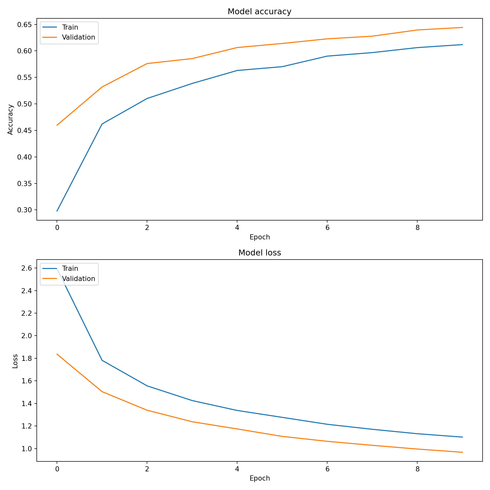

Code
import pandas as pd
import numpy as np
from pyprojroot.here import here
import matplotlib.pyplot as plt
from sklearn.model_selection import train_test_split
from sklearn.preprocessing import StandardScaler, OneHotEncoder
from sklearn.compose import ColumnTransformer
import tensorflow as tf
from tensorflow.keras.models import Sequential
from tensorflow.keras.layers import Dense, Dropout, Input
from tensorflow.keras.utils import to_categorical
# Load the data
data = pd.read_csv(here("data/data_cleaned.csv"))
# Display the structure of the data
print(data.info())<class 'pandas.core.frame.DataFrame'>
RangeIndex: 42240 entries, 0 to 42239
Data columns (total 18 columns):
# Column Non-Null Count Dtype
--- ------ -------------- -----
0 make 42240 non-null object
1 model_year 42240 non-null int64
2 vehicle_class 42240 non-null object
3 drive 42240 non-null object
4 engine_cylinders 42237 non-null object
5 engine_displacement 42238 non-null object
6 transmission 42240 non-null object
7 fuel_type_1 42240 non-null object
8 city_mpg_fuel_type_1 42240 non-null int64
9 highway_mpg_fuel_type_1 42240 non-null int64
10 fuel_type_2 42240 non-null object
11 city_mpg_fuel_type_2 42240 non-null int64
12 highway_mpg_fuel_type_2 42240 non-null int64
13 range_ev_city_fuel_type_1 42240 non-null int64
14 range_ev_highway_fuel_type_1 42240 non-null float64
15 range_ev_city_fuel_type_2 42240 non-null int64
16 range_ev_highway_fuel_type_2 42240 non-null float64
17 charge_time_240v 42240 non-null float64
dtypes: float64(3), int64(7), object(8)
memory usage: 5.8+ MB
NoneCode
# Display the first few rows of the data
print(data.head()) make model_year ... range_ev_highway_fuel_type_2 charge_time_240v
0 Alfa Romeo 1985 ... 0.0 0.0
1 Chevrolet 1985 ... 0.0 0.0
2 Chevrolet 1985 ... 0.0 0.0
3 Nissan 1985 ... 0.0 0.0
4 Nissan 1985 ... 0.0 0.0
[5 rows x 18 columns]Code
# Identify categorical and numerical columns
categorical_cols = data.select_dtypes(include=['object']).columns.tolist()
numerical_cols = data.select_dtypes(include=['int64', 'float64']).columns.tolist()
# Remove the target column 'make' from the features list
if 'make' in categorical_cols:
categorical_cols.remove('make')
if 'make' in numerical_cols:
numerical_cols.remove('make')
print(f"Categorical columns: {categorical_cols}")Categorical columns: ['vehicle_class', 'drive', 'engine_cylinders', 'engine_displacement', 'transmission', 'fuel_type_1', 'fuel_type_2']Code
print(f"Numerical columns: {numerical_cols}")Numerical columns: ['model_year', 'city_mpg_fuel_type_1', 'highway_mpg_fuel_type_1', 'city_mpg_fuel_type_2', 'highway_mpg_fuel_type_2', 'range_ev_city_fuel_type_1', 'range_ev_highway_fuel_type_1', 'range_ev_city_fuel_type_2', 'range_ev_highway_fuel_type_2', 'charge_time_240v']Code
# Define the preprocessing steps for numerical and categorical columns
preprocessor = ColumnTransformer(
transformers=[
('num', StandardScaler(), numerical_cols),
('cat', OneHotEncoder(sparse_output=False), categorical_cols) # Set sparse_output to False
])
# Split data into features and target
X = data.drop('make', axis=1)
y = data['make']
# Apply preprocessing and split data into training and testing sets
X_preprocessed = preprocessor.fit_transform(X)
# Encode the target variable
y_encoded = pd.get_dummies(y).values
# Split the data into training and testing sets
X_train, X_test, y_train, y_test = train_test_split(X_preprocessed, y_encoded, test_size=0.2, random_state=123)
# Define the neural network model
model = Sequential([
Input(shape=(X_train.shape[1],)),
Dense(128, activation='relu'),
Dropout(0.2),
Dense(64, activation='relu'),
Dropout(0.2),
Dense(y_train.shape[1], activation='softmax')
])
# Compile the model
model.compile(optimizer='adam', loss='categorical_crossentropy', metrics=['accuracy'])
# Train the model
history = model.fit(X_train, y_train, epochs=10, batch_size=32, validation_split=0.2)Epoch 1/10
[1m 1/845[0m [37m━━━━━━━━━━━━━━━━━━━━[0m [1m4:10[0m 297ms/step - accuracy: 0.0000e+00 - loss: 4.9082
[1m121/845[0m [32m━━[0m[37m━━━━━━━━━━━━━━━━━━[0m [1m0s[0m 417us/step - accuracy: 0.0669 - loss: 4.3958
[1m253/845[0m [32m━━━━━[0m[37m━━━━━━━━━━━━━━━[0m [1m0s[0m 398us/step - accuracy: 0.1022 - loss: 3.9742
[1m386/845[0m [32m━━━━━━━━━[0m[37m━━━━━━━━━━━[0m [1m0s[0m 391us/step - accuracy: 0.1305 - loss: 3.7152
[1m519/845[0m [32m━━━━━━━━━━━━[0m[37m━━━━━━━━[0m [1m0s[0m 387us/step - accuracy: 0.1543 - loss: 3.5292
[1m652/845[0m [32m━━━━━━━━━━━━━━━[0m[37m━━━━━[0m [1m0s[0m 385us/step - accuracy: 0.1747 - loss: 3.3847
[1m786/845[0m [32m━━━━━━━━━━━━━━━━━━[0m[37m━━[0m [1m0s[0m 384us/step - accuracy: 0.1923 - loss: 3.2665
[1m845/845[0m [32m━━━━━━━━━━━━━━━━━━━━[0m[37m[0m [1m1s[0m 499us/step - accuracy: 0.1995 - loss: 3.2202 - val_accuracy: 0.4598 - val_loss: 1.8365
Epoch 2/10
[1m 1/845[0m [37m━━━━━━━━━━━━━━━━━━━━[0m [1m6s[0m 7ms/step - accuracy: 0.4688 - loss: 1.7849
[1m132/845[0m [32m━━━[0m[37m━━━━━━━━━━━━━━━━━[0m [1m0s[0m 384us/step - accuracy: 0.4272 - loss: 1.9414
[1m265/845[0m [32m━━━━━━[0m[37m━━━━━━━━━━━━━━[0m [1m0s[0m 381us/step - accuracy: 0.4318 - loss: 1.9232
[1m398/845[0m [32m━━━━━━━━━[0m[37m━━━━━━━━━━━[0m [1m0s[0m 379us/step - accuracy: 0.4362 - loss: 1.9063
[1m532/845[0m [32m━━━━━━━━━━━━[0m[37m━━━━━━━━[0m [1m0s[0m 378us/step - accuracy: 0.4400 - loss: 1.8916
[1m665/845[0m [32m━━━━━━━━━━━━━━━[0m[37m━━━━━[0m [1m0s[0m 378us/step - accuracy: 0.4428 - loss: 1.8777
[1m799/845[0m [32m━━━━━━━━━━━━━━━━━━[0m[37m━━[0m [1m0s[0m 377us/step - accuracy: 0.4454 - loss: 1.8643
[1m845/845[0m [32m━━━━━━━━━━━━━━━━━━━━[0m[37m[0m [1m0s[0m 441us/step - accuracy: 0.4463 - loss: 1.8598 - val_accuracy: 0.5319 - val_loss: 1.5042
Epoch 3/10
[1m 1/845[0m [37m━━━━━━━━━━━━━━━━━━━━[0m [1m6s[0m 7ms/step - accuracy: 0.5625 - loss: 1.7158
[1m134/845[0m [32m━━━[0m[37m━━━━━━━━━━━━━━━━━[0m [1m0s[0m 378us/step - accuracy: 0.5110 - loss: 1.6214
[1m268/845[0m [32m━━━━━━[0m[37m━━━━━━━━━━━━━━[0m [1m0s[0m 376us/step - accuracy: 0.5068 - loss: 1.6179
[1m402/845[0m [32m━━━━━━━━━[0m[37m━━━━━━━━━━━[0m [1m0s[0m 376us/step - accuracy: 0.5052 - loss: 1.6119
[1m535/845[0m [32m━━━━━━━━━━━━[0m[37m━━━━━━━━[0m [1m0s[0m 376us/step - accuracy: 0.5052 - loss: 1.6054
[1m669/845[0m [32m━━━━━━━━━━━━━━━[0m[37m━━━━━[0m [1m0s[0m 376us/step - accuracy: 0.5054 - loss: 1.5994
[1m803/845[0m [32m━━━━━━━━━━━━━━━━━━━[0m[37m━[0m [1m0s[0m 375us/step - accuracy: 0.5058 - loss: 1.5935
[1m845/845[0m [32m━━━━━━━━━━━━━━━━━━━━[0m[37m[0m [1m0s[0m 438us/step - accuracy: 0.5060 - loss: 1.5917 - val_accuracy: 0.5761 - val_loss: 1.3396
Epoch 4/10
[1m 1/845[0m [37m━━━━━━━━━━━━━━━━━━━━[0m [1m5s[0m 7ms/step - accuracy: 0.5312 - loss: 1.5250
[1m134/845[0m [32m━━━[0m[37m━━━━━━━━━━━━━━━━━[0m [1m0s[0m 377us/step - accuracy: 0.5382 - loss: 1.4442
[1m268/845[0m [32m━━━━━━[0m[37m━━━━━━━━━━━━━━[0m [1m0s[0m 376us/step - accuracy: 0.5371 - loss: 1.4503
[1m402/845[0m [32m━━━━━━━━━[0m[37m━━━━━━━━━━━[0m [1m0s[0m 375us/step - accuracy: 0.5351 - loss: 1.4534
[1m536/845[0m [32m━━━━━━━━━━━━[0m[37m━━━━━━━━[0m [1m0s[0m 375us/step - accuracy: 0.5343 - loss: 1.4527
[1m671/845[0m [32m━━━━━━━━━━━━━━━[0m[37m━━━━━[0m [1m0s[0m 374us/step - accuracy: 0.5344 - loss: 1.4498
[1m805/845[0m [32m━━━━━━━━━━━━━━━━━━━[0m[37m━[0m [1m0s[0m 374us/step - accuracy: 0.5350 - loss: 1.4465
[1m845/845[0m [32m━━━━━━━━━━━━━━━━━━━━[0m[37m[0m [1m0s[0m 438us/step - accuracy: 0.5352 - loss: 1.4455 - val_accuracy: 0.5854 - val_loss: 1.2376
Epoch 5/10
[1m 1/845[0m [37m━━━━━━━━━━━━━━━━━━━━[0m [1m6s[0m 7ms/step - accuracy: 0.5625 - loss: 1.3083
[1m133/845[0m [32m━━━[0m[37m━━━━━━━━━━━━━━━━━[0m [1m0s[0m 380us/step - accuracy: 0.5665 - loss: 1.3479
[1m267/845[0m [32m━━━━━━[0m[37m━━━━━━━━━━━━━━[0m [1m0s[0m 378us/step - accuracy: 0.5643 - loss: 1.3544
[1m400/845[0m [32m━━━━━━━━━[0m[37m━━━━━━━━━━━[0m [1m0s[0m 378us/step - accuracy: 0.5643 - loss: 1.3507
[1m534/845[0m [32m━━━━━━━━━━━━[0m[37m━━━━━━━━[0m [1m0s[0m 377us/step - accuracy: 0.5639 - loss: 1.3498
[1m668/845[0m [32m━━━━━━━━━━━━━━━[0m[37m━━━━━[0m [1m0s[0m 376us/step - accuracy: 0.5639 - loss: 1.3486
[1m802/845[0m [32m━━━━━━━━━━━━━━━━━━[0m[37m━━[0m [1m0s[0m 376us/step - accuracy: 0.5639 - loss: 1.3472
[1m845/845[0m [32m━━━━━━━━━━━━━━━━━━━━[0m[37m[0m [1m0s[0m 438us/step - accuracy: 0.5639 - loss: 1.3468 - val_accuracy: 0.6063 - val_loss: 1.1739
Epoch 6/10
[1m 1/845[0m [37m━━━━━━━━━━━━━━━━━━━━[0m [1m5s[0m 7ms/step - accuracy: 0.5312 - loss: 1.2960
[1m133/845[0m [32m━━━[0m[37m━━━━━━━━━━━━━━━━━[0m [1m0s[0m 381us/step - accuracy: 0.5765 - loss: 1.2761
[1m268/845[0m [32m━━━━━━[0m[37m━━━━━━━━━━━━━━[0m [1m0s[0m 376us/step - accuracy: 0.5749 - loss: 1.2810
[1m403/845[0m [32m━━━━━━━━━[0m[37m━━━━━━━━━━━[0m [1m0s[0m 375us/step - accuracy: 0.5735 - loss: 1.2809
[1m539/845[0m [32m━━━━━━━━━━━━[0m[37m━━━━━━━━[0m [1m0s[0m 373us/step - accuracy: 0.5727 - loss: 1.2801
[1m674/845[0m [32m━━━━━━━━━━━━━━━[0m[37m━━━━━[0m [1m0s[0m 373us/step - accuracy: 0.5720 - loss: 1.2799
[1m809/845[0m [32m━━━━━━━━━━━━━━━━━━━[0m[37m━[0m [1m0s[0m 373us/step - accuracy: 0.5714 - loss: 1.2798
[1m845/845[0m [32m━━━━━━━━━━━━━━━━━━━━[0m[37m[0m [1m0s[0m 437us/step - accuracy: 0.5714 - loss: 1.2797 - val_accuracy: 0.6140 - val_loss: 1.1077
Epoch 7/10
[1m 1/845[0m [37m━━━━━━━━━━━━━━━━━━━━[0m [1m6s[0m 7ms/step - accuracy: 0.6875 - loss: 0.8757
[1m133/845[0m [32m━━━[0m[37m━━━━━━━━━━━━━━━━━[0m [1m0s[0m 381us/step - accuracy: 0.6063 - loss: 1.1810
[1m267/845[0m [32m━━━━━━[0m[37m━━━━━━━━━━━━━━[0m [1m0s[0m 377us/step - accuracy: 0.6024 - loss: 1.1940
[1m401/845[0m [32m━━━━━━━━━[0m[37m━━━━━━━━━━━[0m [1m0s[0m 376us/step - accuracy: 0.6004 - loss: 1.1980
[1m535/845[0m [32m━━━━━━━━━━━━[0m[37m━━━━━━━━[0m [1m0s[0m 375us/step - accuracy: 0.5980 - loss: 1.2028
[1m669/845[0m [32m━━━━━━━━━━━━━━━[0m[37m━━━━━[0m [1m0s[0m 375us/step - accuracy: 0.5965 - loss: 1.2051
[1m804/845[0m [32m━━━━━━━━━━━━━━━━━━━[0m[37m━[0m [1m0s[0m 375us/step - accuracy: 0.5954 - loss: 1.2066
[1m845/845[0m [32m━━━━━━━━━━━━━━━━━━━━[0m[37m[0m [1m0s[0m 438us/step - accuracy: 0.5952 - loss: 1.2070 - val_accuracy: 0.6227 - val_loss: 1.0641
Epoch 8/10
[1m 1/845[0m [37m━━━━━━━━━━━━━━━━━━━━[0m [1m6s[0m 7ms/step - accuracy: 0.7812 - loss: 0.9057
[1m133/845[0m [32m━━━[0m[37m━━━━━━━━━━━━━━━━━[0m [1m0s[0m 380us/step - accuracy: 0.6145 - loss: 1.1661
[1m267/845[0m [32m━━━━━━[0m[37m━━━━━━━━━━━━━━[0m [1m0s[0m 377us/step - accuracy: 0.6067 - loss: 1.1683
[1m402/845[0m [32m━━━━━━━━━[0m[37m━━━━━━━━━━━[0m [1m0s[0m 375us/step - accuracy: 0.6029 - loss: 1.1711
[1m537/845[0m [32m━━━━━━━━━━━━[0m[37m━━━━━━━━[0m [1m0s[0m 375us/step - accuracy: 0.6008 - loss: 1.1732
[1m672/845[0m [32m━━━━━━━━━━━━━━━[0m[37m━━━━━[0m [1m0s[0m 374us/step - accuracy: 0.5998 - loss: 1.1735
[1m806/845[0m [32m━━━━━━━━━━━━━━━━━━━[0m[37m━[0m [1m0s[0m 374us/step - accuracy: 0.5993 - loss: 1.1731
[1m845/845[0m [32m━━━━━━━━━━━━━━━━━━━━[0m[37m[0m [1m0s[0m 437us/step - accuracy: 0.5992 - loss: 1.1730 - val_accuracy: 0.6278 - val_loss: 1.0288
Epoch 9/10
[1m 1/845[0m [37m━━━━━━━━━━━━━━━━━━━━[0m [1m6s[0m 7ms/step - accuracy: 0.6250 - loss: 1.1846
[1m133/845[0m [32m━━━[0m[37m━━━━━━━━━━━━━━━━━[0m [1m0s[0m 380us/step - accuracy: 0.6063 - loss: 1.1532
[1m267/845[0m [32m━━━━━━[0m[37m━━━━━━━━━━━━━━[0m [1m0s[0m 377us/step - accuracy: 0.6028 - loss: 1.1528
[1m401/845[0m [32m━━━━━━━━━[0m[37m━━━━━━━━━━━[0m [1m0s[0m 376us/step - accuracy: 0.6022 - loss: 1.1498
[1m536/845[0m [32m━━━━━━━━━━━━[0m[37m━━━━━━━━[0m [1m0s[0m 375us/step - accuracy: 0.6025 - loss: 1.1467
[1m670/845[0m [32m━━━━━━━━━━━━━━━[0m[37m━━━━━[0m [1m0s[0m 375us/step - accuracy: 0.6027 - loss: 1.1447
[1m804/845[0m [32m━━━━━━━━━━━━━━━━━━━[0m[37m━[0m [1m0s[0m 374us/step - accuracy: 0.6030 - loss: 1.1432
[1m845/845[0m [32m━━━━━━━━━━━━━━━━━━━━[0m[37m[0m [1m0s[0m 437us/step - accuracy: 0.6032 - loss: 1.1427 - val_accuracy: 0.6394 - val_loss: 0.9956
Epoch 10/10
[1m 1/845[0m [37m━━━━━━━━━━━━━━━━━━━━[0m [1m5s[0m 7ms/step - accuracy: 0.6562 - loss: 0.9352
[1m133/845[0m [32m━━━[0m[37m━━━━━━━━━━━━━━━━━[0m [1m0s[0m 379us/step - accuracy: 0.6189 - loss: 1.0865
[1m267/845[0m [32m━━━━━━[0m[37m━━━━━━━━━━━━━━[0m [1m0s[0m 377us/step - accuracy: 0.6156 - loss: 1.1021
[1m401/845[0m [32m━━━━━━━━━[0m[37m━━━━━━━━━━━[0m [1m0s[0m 376us/step - accuracy: 0.6161 - loss: 1.1021
[1m535/845[0m [32m━━━━━━━━━━━━[0m[37m━━━━━━━━[0m [1m0s[0m 376us/step - accuracy: 0.6158 - loss: 1.1022
[1m669/845[0m [32m━━━━━━━━━━━━━━━[0m[37m━━━━━[0m [1m0s[0m 375us/step - accuracy: 0.6156 - loss: 1.1021
[1m803/845[0m [32m━━━━━━━━━━━━━━━━━━━[0m[37m━[0m [1m0s[0m 375us/step - accuracy: 0.6151 - loss: 1.1019
[1m845/845[0m [32m━━━━━━━━━━━━━━━━━━━━[0m[37m[0m [1m0s[0m 439us/step - accuracy: 0.6149 - loss: 1.1018 - val_accuracy: 0.6442 - val_loss: 0.9671Code
# Evaluate the model
loss, accuracy = model.evaluate(X_test, y_test)
[1m 1/264[0m [37m━━━━━━━━━━━━━━━━━━━━[0m [1m1s[0m 6ms/step - accuracy: 0.6250 - loss: 0.8191
[1m233/264[0m [32m━━━━━━━━━━━━━━━━━[0m[37m━━━[0m [1m0s[0m 216us/step - accuracy: 0.6309 - loss: 0.9934
[1m264/264[0m [32m━━━━━━━━━━━━━━━━━━━━[0m[37m[0m [1m0s[0m 217us/step - accuracy: 0.6319 - loss: 0.9938Code
print(f'Test accuracy: {accuracy}')Test accuracy: 0.6389678120613098Code
# Make predictions
predictions = np.argmax(model.predict(X_test), axis=1)
[1m 1/264[0m [37m━━━━━━━━━━━━━━━━━━━━[0m [1m3s[0m 14ms/step
[1m260/264[0m [32m━━━━━━━━━━━━━━━━━━━[0m[37m━[0m [1m0s[0m 193us/step
[1m264/264[0m [32m━━━━━━━━━━━━━━━━━━━━[0m[37m[0m [1m0s[0m 193us/stepCode
# Print predictions
print(predictions)[114 19 124 ... 36 74 36]Code
# Plot the accuracy and loss
fig, axs = plt.subplots(2, 1, figsize=(10, 10))
# Plot training & validation accuracy values
axs[0].plot(history.history['accuracy'])
axs[0].plot(history.history['val_accuracy'])
axs[0].set_title('Model accuracy')
axs[0].set_ylabel('Accuracy')
axs[0].set_xlabel('Epoch')
axs[0].legend(['Train', 'Validation'], loc='upper left')
# Plot training & validation loss values
axs[1].plot(history.history['loss'])
axs[1].plot(history.history['val_loss'])
axs[1].set_title('Model loss')
axs[1].set_ylabel('Loss')
axs[1].set_xlabel('Epoch')
axs[1].legend(['Train', 'Validation'], loc='upper left')
plt.tight_layout()
plt.show()